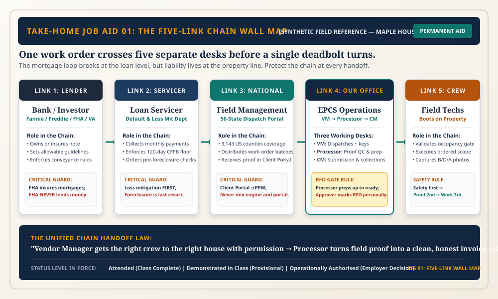

OPERATIONAL POCKET TOOLS · SIX MODULES
Take-Home Pack: Take the Chain With You
Carry the complete operational engine into the field and onto the processing desk: checklists, dealing cards, the money ladder, and the 11-stop lifecycle spine.

The Six Take-Home Reference Tools
Preservation Office Course — 11 Governing Chapters (300 Min Total)
Ch1: One House, Five Hours (10 min)
Ch2: The Chain: Five Hands on One House (25 min)
Ch3: How the System Was Built (30 min)
Ch4: Foreclosure, Step by Step (20 min)
Ch5: Check Yourself: Rebuild the Chain (10 min)
Ch6: Who May Do What (30 min)
Ch7: The Job, Start to Finish (35 min)
Ch8: Five Jobs, Done Right (25 min)
Ch9: Prove It With Photos (35 min)
Ch10: Where the Money Goes (25 min)
Ch11: The Final Test: One Unseen House (35 min)